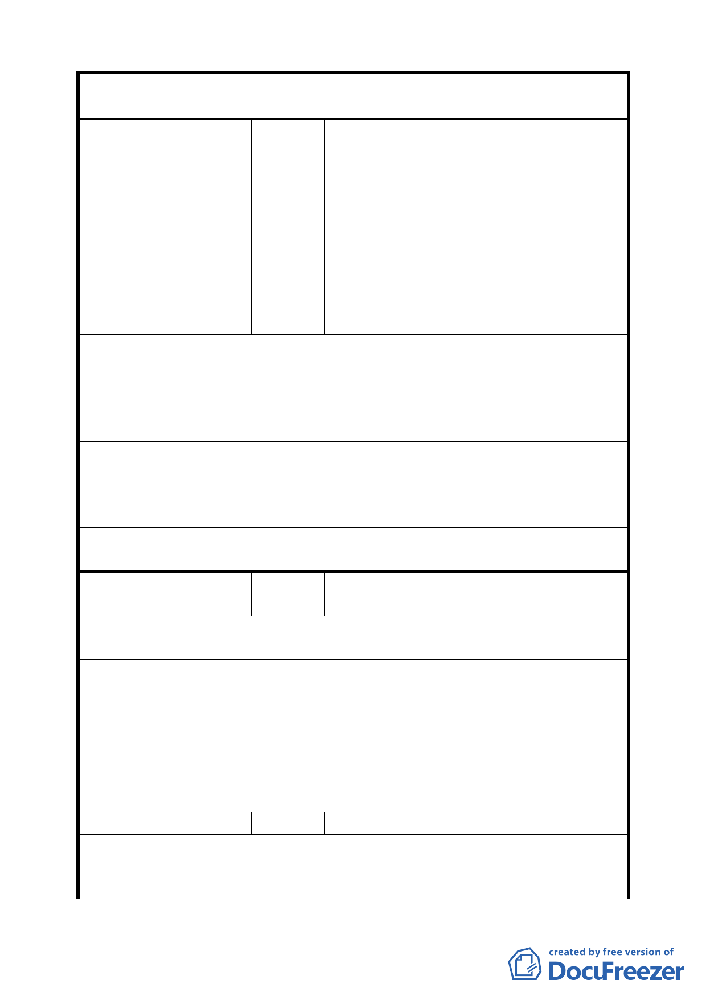

案 名 變更臺北市中正區齊東街附近住宅區為保存區及日式宿舍風
貌保存特定專用區主要計畫案
陳情理由
建議辦法
專案小組
審查結論
委員會決議
芳、張瑋恒、林曉茵、傅秋珍、游易軒、吳秀霞、莊忻宜、
吳龍斌、紀景元、萬明濤、盧葉碧玉、于樹勇、王俊珊、
周櫻琴、林美惠、蔡忠益、蔡秋桐、黃志強、俞碧琦、林
筱梅、何淑貞、王繼榮、鍾國保、黃世勳、陳朝盟、黃慧
君、李大偉、曹慧玲、王秀貞、鍾秀芳、羅妃雅、鍾國強、
何麗燕、關東傑、陳賽華、李志偉、徐思祺、黃秀梨、王
鼎耀、馬珮縈、楊淑芳、裘智喬、王劍平、施中興、洪一
鳴、姚成富、馬秀蘭、汪守綽、吳麗玉、周楊殊、呂玉英、
李冠誼、蔡孟秀、李湘玲、王惠平、吳銘樟、梁伊莉、陸
光前、杜玉鳳、束夢君、詹寶桂、王巧瑜、姜麗燁、程天
龍、許伊儒、蔡育更、姚曼齡、王鴻涂、陳威安、楊黃招
子、李雅琴、張振東、周櫻滿、陳義山、謝慧君、黃坤興
一、 日式宿舍外貌殘破不堪，無保存意義，應整頓市容。
二、 雜草叢生，衛生品質差，居家品質不良。
三、 遊民多，夜間治安堪慮。
四、 舊有巷道太小。
應開放改建。
一、 同編號 1。
二、 關於環境衛生及遊民所造成環境安全等問題，非關都市
計畫變更事宜，請文化局基於環境維護之義務，與市府
權責單位（衛生局、警察局）協調土地所有權單位改善。
一、 本案依文化局所提修正內容對照表修正通過。
二、 依專案小組審查結論辦理。
編
號4
陳情人
俞佳宏、林千惠、呂建鴻、王憶蓁、林玉
涵、周幸子
陳情理由
該巷內無人整理、蚊蠅滋生、臭氣逼人，保存它需要人力維
護，勞民傷財。
建 議 辦 法 改建，別浪費整個區域，單獨幾個特別外貌完整之建物即可。
一、 同編號 2。
專 案 小 組 二、 關於環境衛生問題，非關都市計畫變更事宜，請文化局
審查結論
商請市府權責單位（衛生局）協調土地所有權單位辦理
改善。
委員會決議
一、 本案依文化局所提修正內容對照表修正通過。
二、 依專案小組審查結論辦理。
編
號5
陳情人 楊淑青
陳情理由
臺北市住的品質已經很差，應將不必要的、可開發的，重設
為住宅也好、公設也可提高生活品質。
建 議 辦 法 一定要規劃，保障居民權益。
七